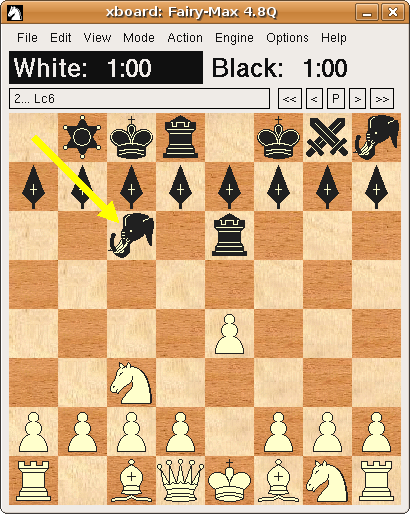

![[screenshot normal game]](graphics/xboard-4.4.0.png)
![[screenshot bughouse game]](graphics/xboard-4.4.0-variant.png)
![[screenshot shogi game]](graphics/xboard-4.4.0-showgi.png)

![[screenshot xiangqi game]](graphics/xboard-4.4.0-XQ.png)
XBoard is a graphical user interface for chess in all its major forms, including international chess, Xiangqi (Chinese chess), Shogi (Japanese chess) and Makruk, in addition to many minor variants such as Loser's chess, Crazyhouse, Chess960 and Capablanca chess. It displays a chessboard on the screen, accepts moves made with the mouse, and loads and saves games in Portable Game Notation (PGN). XBoard serves as a front-end for many different chess services, including:
XBoard runs on Unix and Unix-like systems that use the X Window System.

WinBoard, configured with marble board
Source code for recent stable versions are online (HTTPS; HTTP). These can also be found on one of the mirrors of ftp.gnu.org; please use a mirror if possible.
Precompiled versions of XBoard are available in many GNU/Linux distributions, including Debian.
Our official git repository is available on Savannah. All branches can be viewed there. The web page also provides tar-balls of all tagged versions, these tar-balls are different from the ones that you can download from the ftp-server and you will need to run ./autogen.sh on them as described below.
To obtain a copy of the repository, you can use the command "git clone http://git.savannah.gnu.org/r/xboard.git".
After cloning the git-repository or downloading and unpacking a snapshot tar-ball from the git repository,
run ./autogen.sh, ./configure and then make and make install.
Unpack the tar ball and do ./configure followed by make and make install.
For development sources and other information, please see the XBoard project page at savannah.gnu.org.
You can also find an archive of old versions on the ftp server.
The official manual page for XBoard is available online, as is documentation for most GNU software. This discusses every feature XBoard has in detail. You may also find this information on your local system by running info xboard or man xboard, or by looking at /usr/doc/xboard/, /usr/local/doc/xboard/, or similar directories on your system.
There now also exists an XBoard User Guide, which only presents the main features in a more pedestrian way. This would be an excellent starting point if you are a novice XBoard user. If you have prior experience with XBoard, but just want to know what new features have been added since the version you were used to, the pages in the What's New section would be the place to go.
We also have a description of the Chess Engine Communication Protocol used by XBoard to communicate with Chess Engines. (In addition, we also support the UCI protocol.)
The project also includes a version that makes Microsoft Windows API calls, historically known as WinBoard. Its development, reporting bugs and any other requests can also be done at the same places as for XBoard (see below).
These are screenshots taken from version 4.4.0 (click to enlarge).
It would be great if people would like to help in the developing process. We can use all kinds of help, from people who just use the software and have a feature request (send them to developer mailing list), to people who can update/check the documentation and especially people who test development versions (send problems to the developer mailing list). Have a look at the following list in case you are interested:
XBoard has multilingual support, but we need people fluent in other languages for translation purposes. Our translation files are handled by the Translation Project. You can check on our current translation status. If you would like a language that you are fluent in to be supported, please consider joining the Translation Project.
We are always looking for people who are willing to test the latest new features and give us feedback or new ideas. If you are interested, please send an email to our list at <xboard-devel@gnu.org> or just try out the program and reports bugs either to the email list or to the bug-tracker (see below for links).
We are currently adding GTK 3 support, and we would also like to add GTK 4 support. We would like XBoard and its Windows port to be combined together into a single program. Some progress has been made, but there's much more to do. Please email the mailing list for more information if you would like to contribute.
The help files for Xboard and WinBoard could be merged into one document.
The content of the webpage could be updated with screenshots from the latest version. We also have a tutorial that could be integrated.
If you have any questions, please check out our FAQ.
Please check our bug-xboard@gnu.org.
Enhancement requests can be directed to xboard-devel@gnu.org. This is also the designated forum for XBoard development discussions, though because there are currently only a few active developers, private email is frequently used instead.
Announcements about XBoard and much other GNU software are made at <info-gnu@gnu.org>.
To subscribe to these or any GNU mailing lists, please send an empty email with a Subject: header containing just subscribe to the relevant request list. For example, to subscribe yourself to the GNU announcement list, you would send mail to <info-gnu-request@gnu.org>. Or you can use the mailing list web interface.
Please remember that development of XBoard, and GNU in general, is a volunteer effort, and you also can contribute. For information, please read How to help GNU.
XBoard is free software; you can redistribute it and/or modify it under the terms of the GNU General Public License as published by the Free Software Foundation; either version 3 of the License, or (at your option) any later version.